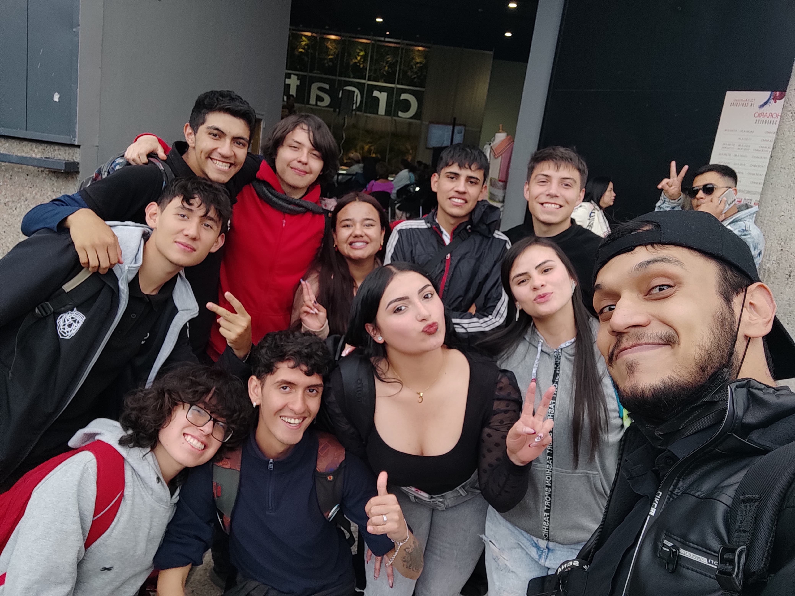
Comunidad de Aprendices SENA
Memoria e interacción grupal de los aprendices durante la jornada de inmersión técnica. El registro evidencia el trabajo colaborativo, el intercambio de conceptos en campo y el enfoque académico de la visita a los pabellones de la feria.
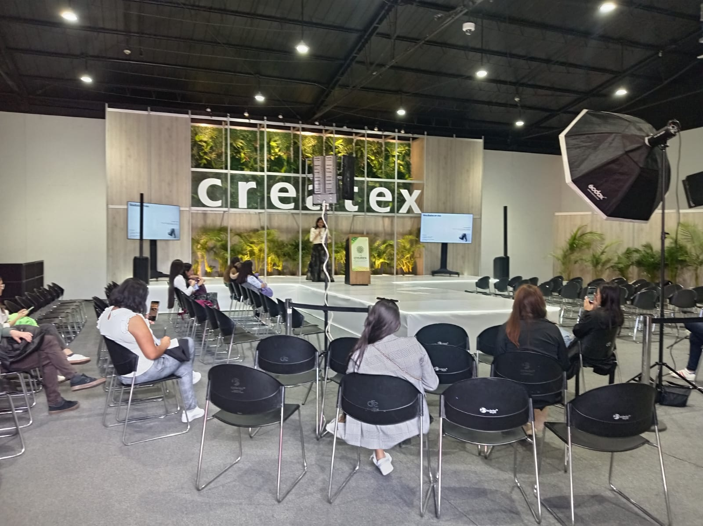
Auditorio y Foro Central de Ponencias
Vista general de la tarima principal de Createx durante uno de los ciclos de conferencias. El espacio integra ayudas audiovisuales de gran formato y un podio digital diseñado para la socialización de proyectos ante el público de la industria.
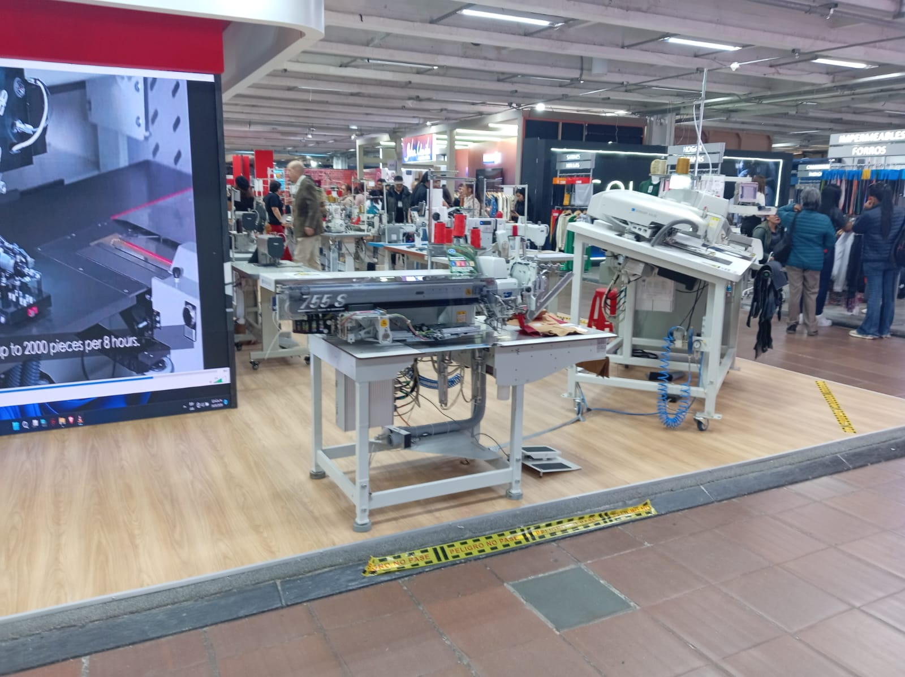
Estaciones de Alta Producción (755 S)
Módulo tecnológico enfocado en la optimización de procesos de confección a gran escala. La maquinaria destaca por su alta eficiencia operativa, anunciando la capacidad técnica de procesar hasta 2000 piezas en jornadas de 8 horas de trabajo contínuo.
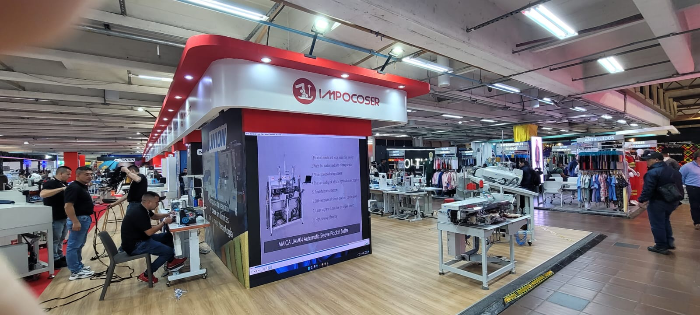
Automatización Tecnológica con Impocoser
Visualización en planta de la estación automatizada MAICA UAM04 enfocada en alta eficiencia de costura estructurada. La integración de paneles detallados permite a los desarrolladores analizar el rendimiento informático del hardware de manufactura avanzada.
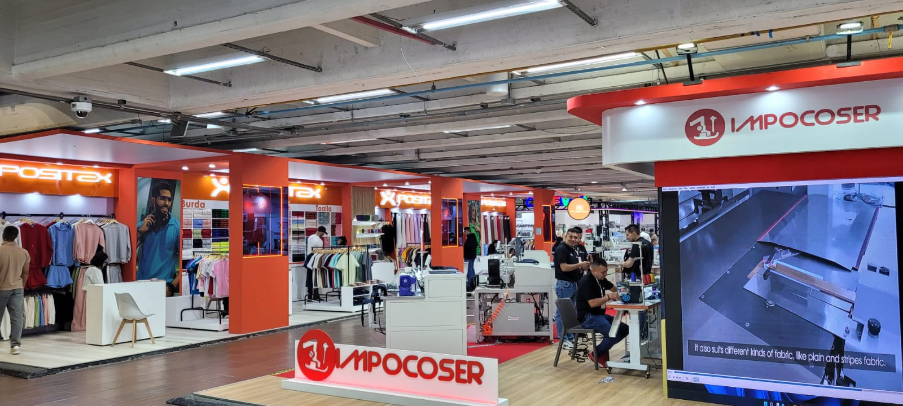
Optimización de Módulos Operativos
Perspectiva de los entornos comerciales e industriales interactivos de Positex e Impocoser. Se observa la distribución del espacio técnico y las pantallas de soporte orientadas a agilizar el trabajo operario con diversos tipos de tejidos planos y estructurados.
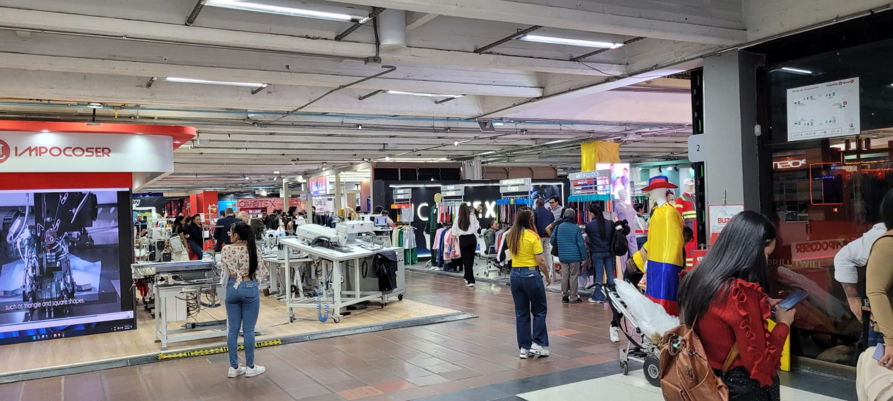
Infraestructura de Marcas e Industria
Vista de uno de los corredores principales de la feria que reúne las marcas independientes y de insumos técnicos. El espacio destaca la interacción comercial de soluciones de automatización aplicadas al diseño textil contemporáneo.
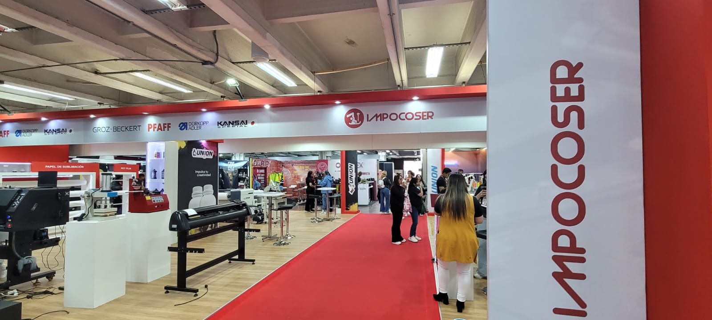
Pasillos de Tecnología y Marcas Aliadas
Registro visual de la zona de demostración de Impocoser que agrupa tecnologías líderes como Durkopp Adler, Groz-Beckert, Pfaff y Kansai Special. Destaca la perfecta infraestructura logística y el uso de alfombras rojas para guiar el flujo técnico del público.
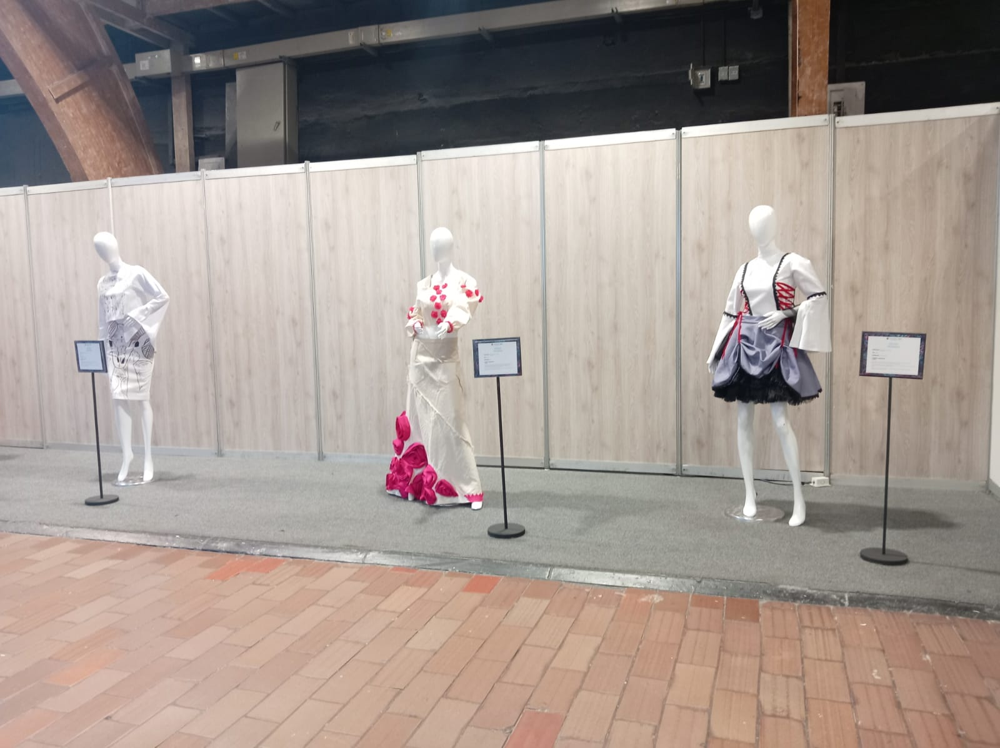
Muestra y Expresión de Vanguardia Académica
Zona de pasarela y exhibición estática con maniquíes que presentan propuestas de trajes con siluetas asimétricas, combinaciones de texturas y contrastes de color dramáticos, sirviendo de inspiración conceptual para nuevos desarrollos creativos.
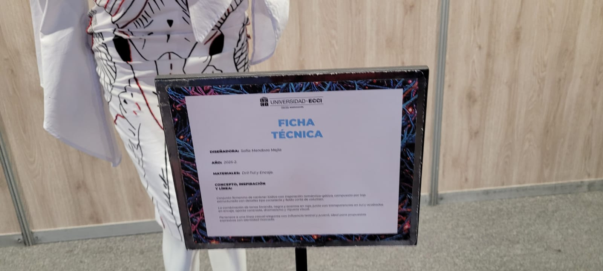
Documentación de Fichas Técnicas - ECCI
Inspección detallada de una ficha técnica de diseño perteneciente a la Universidad ECCI. El documento especifica el uso de materiales como Drill, Tul y Encaje bajo un concepto y línea de diseño de carácter histórico con inspiración romántico-gótica.
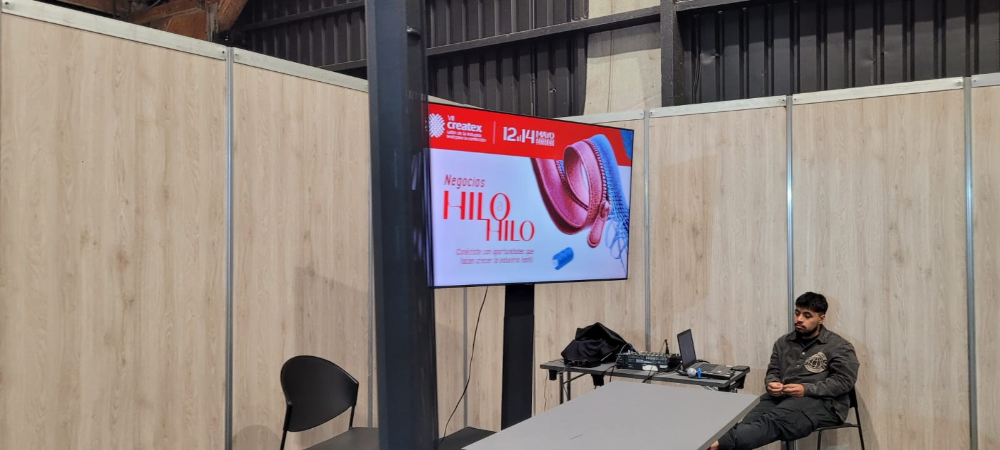
Estrategias de Negocio: Hilo a Hilo
Estación multimedia interactiva donde se proyecta el espacio de interacción sectorial "Negocios Hilo a Hilo", diseñado para conectar ideas, optimizar cadenas de suministro y fomentar alianzas estratégicas entre desarrolladores de tecnología y productores textiles.
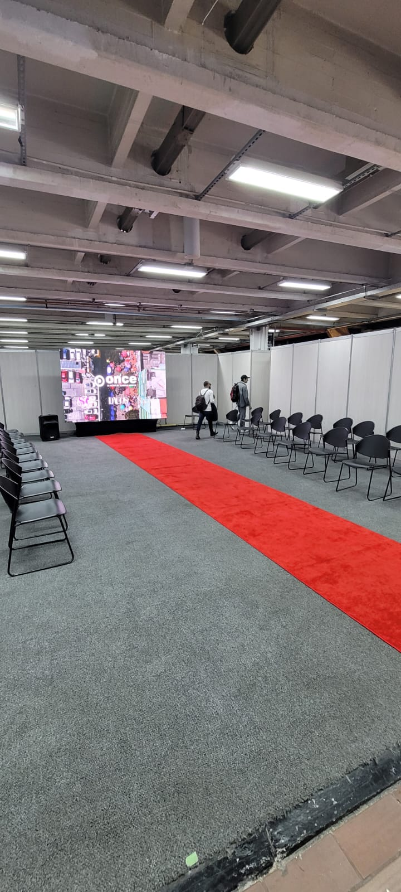
Escenario Principal y Zona de Desfiles
Vista del auditorio principal listo para las ponencias centrales y desfiles de marcas. Cuenta con un pasillo alfombrado y pantallas de gran formato al fondo para el despliegue de material audiovisual de alta fidelidad.
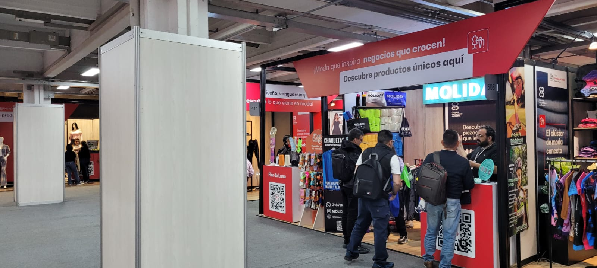
Clúster de Moda de la Cámara de Comercio
Registro del stand de Molida en el pabellón respaldado por el Clúster de Moda de la Cámara de Comercio de Bogotá. El espacio promueve el lema "¡Moda que inspira, negocios que crecen!" y la venta de productos únicos mediante el uso visible de códigos QR informáticos.
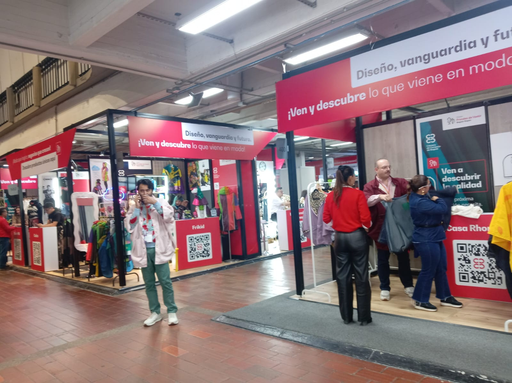
Ecosistema de Diseño, Vanguardia y Futuro
Módulos de exhibición comercial dedicados a marcas de diseño emergente como Frikid y Casa Rhod. Los espacios interactivos demuestran una excelente organización logística pensada para acercar las últimas tendencias de prendas de vestir al consumidor contemporáneo.